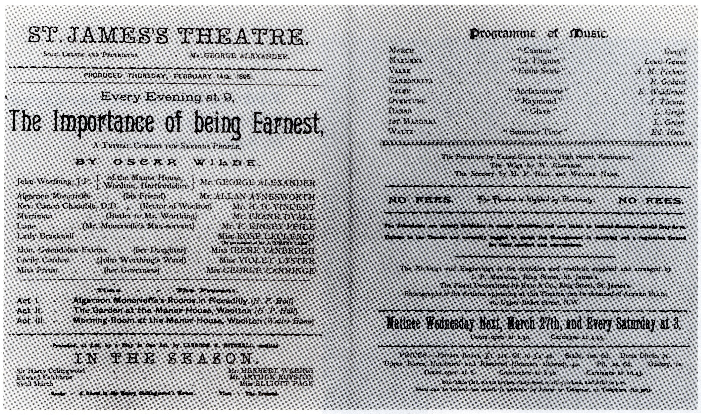

Oscar Wilde's brilliantly witty comedy follows two charming bachelors who invent alter egos to escape their social obligations, only to find themselves tangled in hilariously absurd misunderstandings. With sharp satire, quick banter, and irresistible charm, The Importance of Being Earnest delivers a delightful romp through love, identity, and Victorian etiquette.
Show Dates: December 1 - December 5, 2024
Venue: Cat Eyes Theatre, Main Stage
Running Time: Approximately 2 hours (including intermission)
| Production Company | Cat Eyes Theatre Company |
|---|---|
| Director | Martin Healy |
| Cast Members |
|
| Stage Crew Members |
|
""A delightful comedy that had the audience laughing from start to finish. The wit and humor were on point."
- Allen Wright, Comedy Central Review